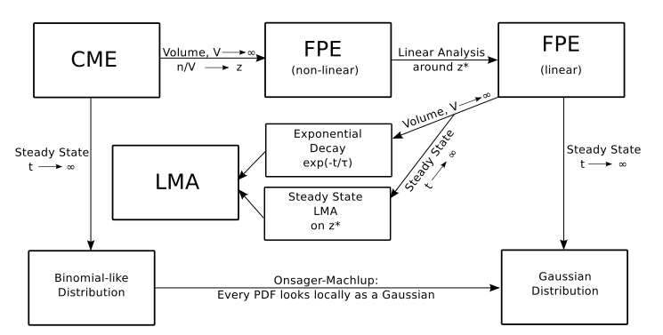
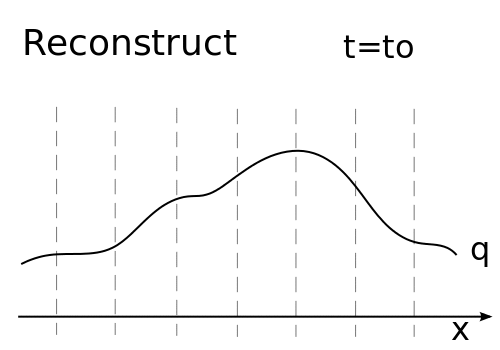

Appendix
Timeline
PhD Timeline

Appendix
Deterministic vs. Stochastic
Deterministic vs. Stochastic reactions.
Relation diagram between the LMA, CME and FPE:
 - The CME is more fundamental.
- Accounts for discrete probabilistic nature of chemical reactions
Appendix
Diffusion Limited Reactions
Stochastic reaction diffusion: existing models w/diffusion
Diffusion Limited Reactions
Partially diffusion controlled BC:
Flux $\propto$ Concetration
$$ 4\pi R^2 D u'(R) = \kappa u(r) \\
k_{CK} = \frac{k_S \kappa}{k_S + \kappa} $$
PDF of particles under a potential $U(r)$ follows
$$ \frac{\partial u(r,t)}{\partial t} =
\frac{D}{r^2}\frac{\partial}{\partial r}
\left(r^2 e^{-\beta U(r)}\frac{\partial [e^{\beta U(r)}u(r,t)]}{\partial r}\right)$$

Smoluchowski → Blue
Collins & Kimball → Red
Stochastic reaction diffusion: existing models w/diffusion
First Passage Time (FPT)
- Given uniformly distributed B's around A:
- What is the expected time for first encounter with A: $t_1$
Solve:
$$\frac{1}{r^{d-1}} \left(\frac{\partial}{\partial r} r^{d-1}D
\frac{\partial}{\partial r} T_d(r) \right) = -1 $$
- Can also ask time for second encounter starting on A boundary: $t_2$
Reaction rates related to FPT:
$$ t_1=\frac{1}{k_S c_0} \hspace{10mm} t_2=\frac{1}{k_s c_0} + \frac{1}{\kappa c_0} \\
k_{CK} = \frac{1}{t_2 c_0} = \frac{k_S \kappa}{k_S + \kappa}$$
Appendix
Coupled Diffusion Model
Coupled Reaction Diffusion (many $B$s)
$f_0([r_l],t)$ is the probability density of $[R_l]=[r_l]$ and none of the $B$'s associated.
$f_k([r_l],t)$ for $k=1,2,\cdots,n$ is the proability density of $[R_l]=[r_l]$ with the $k^{th}$ $B$ now associated with $A$ forming a $C$
$$
\frac{\partial f_0([r_l],t)}{\partial t} = \sum_{j=1}^n\left[
D_0\frac{\partial}{\partial r_j}e^{-\beta U_0(r_j}\frac{\partial}{\partial r_j}e^{\beta U_0(r_j} f_0([r_l],t)
-\alpha (r_j)f_0([r_l],t) + \lambda(r_j)f_j([r_l],t)
\right]
\\[]
\frac{\partial f_k([r_l],t)}{\partial t} = D_1\frac{\partial}{\partial r_k}e^{-\beta U_1(r_j}\frac{\partial}{\partial r_k}e^{\beta U_1(r_k} f_0([r_l],t) - \lambda(r_k)f_k([r_l],t)
+ \\
\sum_{j=1, j\neq k}^n\left[
D_0\frac{\partial}{\partial r_j}e^{-\beta U_0(r_j}\frac{\partial}{\partial r_j}e^{\beta U_0(r_j} f_k([r_l],t)
+\alpha (r_k)f_0([r_l],t)
\right]
$$
Appendix
Fluorescence Correlation Spectroscopy
Appendix
Numerical Methods (Basic)
Numerical methods
The advection equation with velocity $c$:
\[ q(x,t)_t + c q(x,t)_x =0 \]\[ q(x,0) = q_0(x) \]
Has solution
$$q(x,t) = q_0(x-ct)$$
Numerical methods
Godunov's finite volume method
The REA algorithm- Reconstruct piecewise polynomial function
- Evolve hyperbolic equation.
- Average function over grid cell.

Numerical methods
System of hyperbolic equations?
Like acoustics
\[ \begin{aligned} \frac{\partial}{\partial t} \left[\begin{array}{c} p \\ u \end{array} \right] + \underbrace{\left[\begin{array}{c c} 0 & K_0 \\ 1/\rho_0 & 0 \end{array} \right]}_{A} \frac{\partial}{\partial x} \left[\begin{array}{c} p \\ u \end{array} \right] = 0 \end{aligned} \]
As $A = R \Lambda R^{-1}$ with $\Lambda$ diagonal, we can rewrite
\[\begin{aligned} \frac{\partial}{\partial t}\vec{w} + \underbrace{\left[\begin{array}{c c} \lambda_1 & 0 \\ 0 & \lambda_2 \end{array} \right]}_{\Lambda} \frac{\partial}{\partial x} \vec{w} = 0 \hspace{10mm} \mathrm{with} \hspace{10mm} \vec{w} = R^{-1}\left[\begin{array}{c} p \\ u \end{array} \right] \end{aligned} \]
We can solve with the same algorithm.
Numerical methods
Wave formulation: think averaging as updating cell averages with waves coming from the cell edges.
$$ Q_{i}^{n+1} = Q_i^n - \frac{\Delta t}{\Delta x} \times \underbrace{\left[\sum_{p=1}^m(\lambda^p)^+ W_{i-1/2}^p \right. }_{\mathrm{Left Edge}} + \underbrace{\left. \sum_{p=1}^m(\lambda^p)^- W_{i+1/2}^p\right]}_{\mathrm{Right Edge}} $$

On each cell interface, $i-\frac{1}{2}$ and $i+\frac{1}{2}$, we need
- How fast the wave is moving ($\lambda$'s)
- How much of it is moving ($W$'s)
- How we do it?
Numerical methods
The Riemman problem
- Conservation laws (hyperbolic PDEs)
- Constant data with a single discontinuity
- Solve a Riemann problem in each grid edge
- Outputs $\lambda's$ and $W's$
- Works exactly even for some nonlinear systems like Euler.
- There are also approximations.
- Has complicated structure like Rarefactions, CD and shocks
 Riemann diagram for Euler eqs.
Riemann diagram for Euler eqs.
Appendix
Numerical Methods
HLLC solver
The HLLC solver
$$
\tilde{\textbf{U}}(x,t) = \left\{
\begin{array}{l l}
\textbf{U}_L \ \text{if $\frac{x}{t} \le S_L$}\\
\textbf{U}_{*L} \ \text{if $S_L \le \frac{x}{t} \le S_*$},\\
\textbf{U}_{*R} \ \text{if $S_* \le \frac{x}{t} \le S_R$},\\
\textbf{U}_R \ \text{if $\frac{x}{t}\ge S_R$},
\end{array} \right.
$$
Average states:
$$
\textbf{U}_{*K} = \frac{S_K \textbf{U}_K - \textbf{F}_K + p_* \textbf{D}}{S_L - S_*} \\
\mathrm{with:} \hspace{5mm} S_* = \frac{p_R - p_L + \rho_L u_L (S_L - u_L) -\rho_R u_R(S_R - u_R)}{\rho_L(S_L - u_L) - \rho_R(S_R - u_R)}
$$
And approximate speeds
$$
S_L = \text{min}\{u_L - c_L,u_R - c_R\} \ \ \ \ \ S_R = \text{max}\{u_L + c_L, u_R + c_R\}
$$
TR-BDF2 for source terms
TR-BDF2 for $\frac{d U}{dt} = f(U,t)$:
$$ U^*=U^n + \frac{\Delta t}{4}\left[f(U^n) + f(U^*)\right] \\ U^{n+1} = \frac{1}{3}\left[4U^* - U^n + \Delta t f(U^{n+1})\right]. $$
For Euler eqs:
Appendix
Final Comments
Final Comments
What we have done:
- Implemented KMC code for reversible SRD
- Applied it to FCS
- Created the CD and derived classic results from limiting cases
- Modeled multi-interface experimental setup with Euler eqs. and SGEOS
- Showed importance of geometry and interfaces in mTBI
- Suggested cavitation as a damage mechanism in mTBI
What we will do:
- Study bistability with CD model
- Generalization of CD to many A's
- Derive known methods as limits of CD
- Design/implement algorithm to solve CD
- Add arbitrary interfaces w/mapped grids
- Implement a two-phase model
- Implement moving/vibrating interfaces
- Keep collaborating with VA
Final Comments
- FCS application paper almost submitted
- TBI paper in collaboration with VA Hospital scientists almost finished
- Other unifying applications for both areas? - Liposomes diffusion affected by shock waves (experiment in progress)
- Biochemical processes involved in TBI?
Appendix
Key References
- Kimball, G. E., & Collins, F. C. (1949). Diffusion-Controlled Reactions in Liquid Solutions. Industrial an engineering chemistry, (November), 2551–2553.
- Shoup, D., & Szabo, a. (1982). Role of diffusion in ligand binding to macromolecules and cell-bound receptors. Biophysical journal, 40(1), 33–9. doi:10.1016/S0006-3495(82)84455-X
- Andrews, S. S., & Bray, D. (2004). Stochastic simulation of chemical reactions with spatial resolution and single molecule detail. Physical biology, 1(3-4), 137–51. doi:10.1088/1478-3967/1/3/001
- Elson, E. L., & Magde, D. (1974). Fluorescene Correlation Spectroscopy. I. Conceptual Basis and Theory. Biopolymers, (13), 1–27.
- Beard D. A. and Qian H. (2008), Chemical Biophysics: Quantitative Analysis of Cellular Systems, Cambridge
- Fagnan, K. M. (2010). High-resolution Finite Volume Methods for Extracorporeal Shock Wave Therapy, M.
- LeVeque, R. (2002), Finite Volume Methods for Hyperbolic Problems, Cambridge.
- R. J. LeVeque, M. J. Berger, et. al. (2014), Clawpack Software 5.0
- Toro E. F. (2008), Riemann Solvers and Numerical Methods for FLuid Dynamics, Springer
- Peskind, E. R., Petrie, E. C., Cross, D. J., Pagulayan, K., McCraw, K., Hoff, D., Hart, K., et al. (2011). Cerebrocerebellar hypometabolism associated with repetitive blast exposure mild traumatic brain injury in 12 Iraq war Veterans with persistent post-concussive symptoms. NeuroImage, 54 Suppl 1, S76–82. doi:10.1016/j.neuroimage.2010.04.008
- Ivings, M. J., Causon, D. M., & Toro, E. F. (1998). ON RIEMANN SOLVERS FOR COMPRESSIBLE LIQUIDS, 418(June 1997), 395–418.